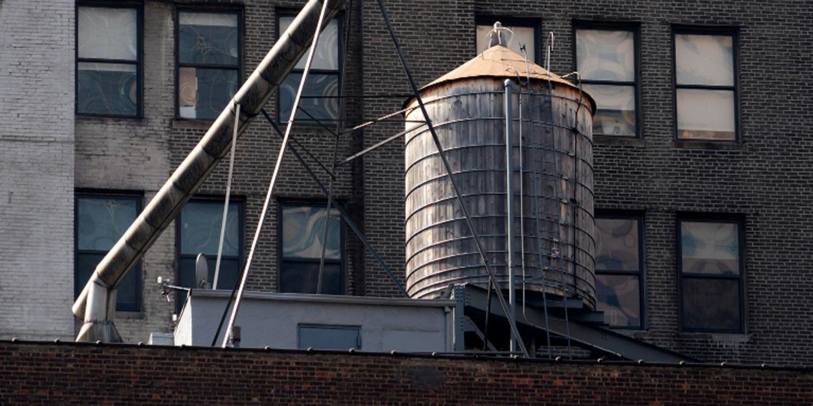

ผงะศพแช่แท็งก์น้ำไม่มีใครรู้ คนดื่มน้ำแช่ศพร่วมปี!
ชาวแฟลตเม็กซิโกร้องน้ำประปารสชาติแปลก เจ้าหน้าที่มาตรวจสอบเปิดฝาแท็งก์ถึงกับผงะ เจอศพดาราสาวที่หายตัวไปร่วมปีลอยอืด สภาพเน่าเปื่อยเต็มที่
เว็บไซต์เดอะมิเรอร์ รายงานในวันที่ 13 มกราคม 2558 ว่า ร่างเน่าเปื่อยดังกล่าวเป็นของ คาร์เมน ยาริรา โนริเอกา เอสปาซา ดาราสาววัย 27 ปี ที่หายตัวไปตั้งแต่เดือนกุมภาพันธ์ปีที่แล้ว ศพของเธอถูกพบลอยอืดเน่าคาแท็งก์ปรับสภาพน้ำของแฟลตที่เธอเคยอาศัยอยู่ในเมืองเม็กซิโกซิตี้ หลังจากเมื่อเร็ว ๆ นี้ผู้พักอาศัยต่างร้องเรียนถึงรสชาติน้ำที่ผิดปกติ จนเจ้าหน้าที่เข้ามาทำการตรวจสอบ และเจอสิ่งที่ทำให้ช็อกไปตาม ๆ กัน
รายงานระบุว่าไม่มีใครได้พบเห็นดาราสาวคนนี้อีกเลยหลังเธอกลับจากการออกกำลังกายที่ฟิตเนสในเดือนกุมภาพันธ์ 2557 เจ้าหน้าที่ตำรวจตั้งข้อสันนิษฐานว่า เธออาจถูกลักพาตัวไปโดยแก๊งค้าโสเภณี ทว่าก็ไม่เคยสืบได้เบาะแสใด ๆ จนครอบครัวและเพื่อนของคาร์เมนได้พิมพ์รูปของเธอไปแปะไว้ตามสถานที่สาธารณะต่าง ๆ เพื่อประกาศตามหา แต่ก็ไม่พบเบาะแสอีกเช่นกัน ด้านชาวแฟลตต่างรู้สึกขนหัวลุก เมื่อคิดว่าตัวเองได้ดื่มและใช้น้ำที่มีศพลอยอยู่มาตลอด 11 เดือน
แม้ศพอยู่ในสภาพเน่าเปื่อยมาก แต่ร่างดังกล่าวก็ได้รับการยืนยันแล้วว่าเป็นดาราสาวคนดังกล่าวแน่ เนื่องจากมีสารจากการทำศัลยกรรมในร่างกายอยู่ในตำแหน่งเดียวกัน โดยร่างของเธอได้ถูกส่งไปสถาบันนิติเวชเพื่อชันสูตรหาสาเหตุการตายแล้ว
สำหรับการสืบสวนในตอนนี้ตำรวจตั้งประเด็นการเสียชีวิตว่าน่าจะเกี่ยวข้องกับความสัมพันธ์ระหว่างเธอกับนักธุรกิจคนหนึ่งที่เคยคบหาด้วย ก่อนที่เธอเปลี่ยนไปคบหากับหนุ่มนักกฎหมาย ซึ่งนักธุรกิจคนนี้ยังเป็นผู้ออกค่าเช่าแฟลตให้คาร์เมน และในสัปดาห์ก่อนที่จะย้ายออกจากหอ จู่ ๆ เธอก็หายตัวไปไร้ร่องรอย
ปาล จาเวียร์ ปาซ เพื่อนของคาร์เมน ให้สัมภาษณ์ว่า "พวกเราต่างคิดว่าเธอโดนลักพาตัวไปแล้วถูกขายเป็นโสเภณี แต่นี่ดูเหมือนเธอกลับยังอยู่ที่แฟลตของตัวเองตลอดเวลา"